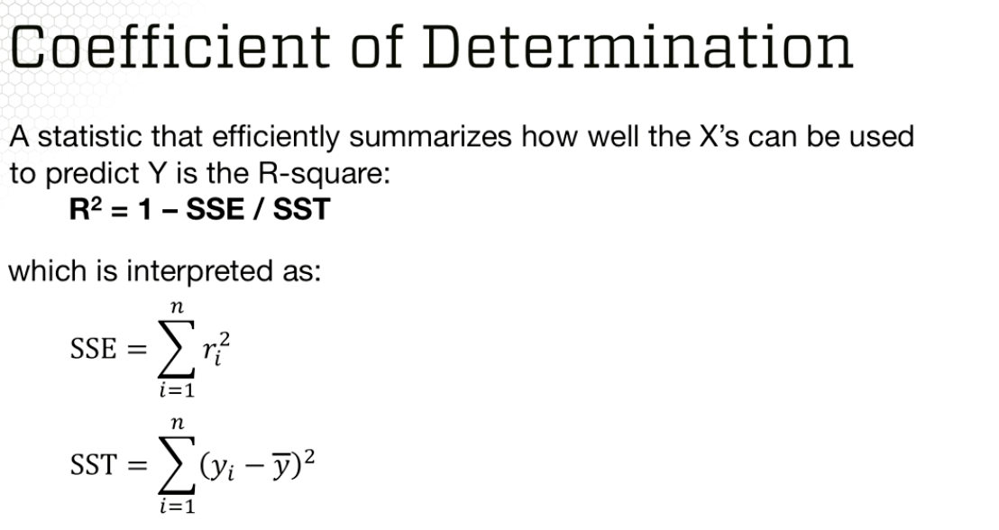
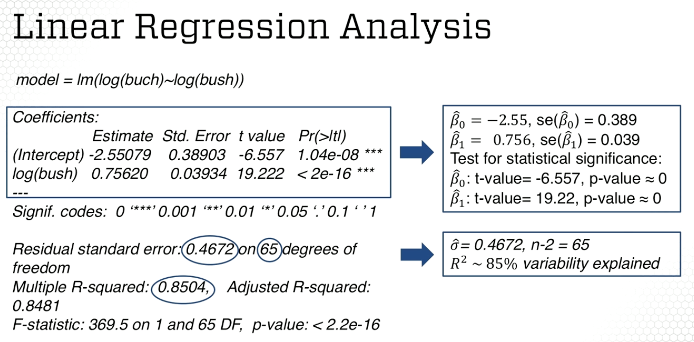

ISYE 6414 Class Notes
2021-01-21
1 Module 1
1.1 Topic 1.1
1.1.1 Lesson 1 - Regression Concepts: Basics
Regression analysis is one of the simplest ways to evaluate the relationship between two or more variables. Two main topics in this course: standard linear regression and generalized linear models.
Module 1 will cover a few examples:
First example: a company that sells medical supplies to hospitals - is there a relationship between sales and advertising? Data includes yearly sales and advertising expenditure.
Second example: test the principle of PPP (purchasing power parity). This is theory that over long periods of time the exchange rate changes will tend to offset the differences in inflation rate between two countries. Data is inflation difference and exhange rate change for several countries.
Third example: From the 2000 election, try to predict whether votes cast in Palm Beach County for Buchanan were actually meant for Bush. This dataset contains many many variables.
In regression, the variable we are interested in understanding is reffered to as the response (dependent) variable. The variables that we think might be useful in modelling the response variable are the predicting (explanatory/independent) variables.
The response variable is a random variable - because it varies with changes in the predictor along with other random changes.
The predicting variable is a fixed variable, it does not change with the response, but is set before the response is measured.
Simple Linear Regression Fits a line to two dimensional data.
\[Y = \beta_{0} + \beta_{1} + \epsilon\]
Mutiple Linear Regression Fits a plane to multiple dimensions.
\[Y = \beta_{0} + \beta_{1}X_1 + \beta_{2}X_2 + \epsilon\]
Polynomial Linear Regression Fits a curved line to data points.
\[Y = \beta_{0} + \beta_{1}X + \beta_{2}X^2 + \epsilon\]
Regression is used for:
- Prediction of response
- Modelling the relationship b/t response and predictors
- Testing hypothesis of associations
Virtually all other methods for studying dependence among variables are variations on the idea of linear regression.
1.1.2 Lesson 2 - Regression Concepts: Estimation
This lesson will cover the modelling framework for simple linear regression and the estimation approach.
The goal is to find the best line that describes a simple linear relationship, estimating \(\beta_{0}\) and \(\beta_{1}\).
Data is n pairs of X and Y data points.
Assumptions:
- Linearity/Mean Zero Assumption: \(E_i = 0\)
- Expected values of error is zero. Model cannot be consistently high/low for certain subgroups of population
- Constant Variance Assumption: \(Var(E_i) = \sigma^2\)
- Model cannot be more accurate for certain groups, and more accurate for other groups.
- Independence Assumption: error terms 1 through n are independent random variables (later we assume \(E_i\) ~ Normal)
- Cannot be true that error terms can predict other error terms.
Model parameters \(\beta_{0}\), \(\beta_{1}\), and \(\sigma^2\) are estimated based on data. You won’t know the true parameters.
To find these parameters, one approach is to find the values that minimize the sum of square errors.
Model Estimation Approach
The above is derived from:
Model Estimation Approach
Which results in the following fitted values and residuals:
Model Estimation Approach
The sample distrbution of the estimator of the variance \(\hat{\sigma^2}\) is chi-squared with n-2 degrees of freedom, assuming normally distributed error terms.
I don’t really understand the next two slides very well, but including them here. It might be worth looking up what exactly a Chi-Squared distribution is, because I’m really not sure what she’s talking about here.
Variance Sampling Distribution 1
Variance Sampling Distribution 2
Model Parameter Interpretation (behavior of \(\beta_1\):
- Positive Values: consistent with a direct relationship between x and y
- Negative Values: consistent with an inverse relationship between x and y
- Small (close to zero) Values: indicates there is not a significant relationship between x and y
\(\hat{\beta_1}\) is the estimated expected change in the response variable associated with one unit of change in the predicting variable.
\(\hat{\beta_0}\) is the estimated expecteed value of response when the predicting variable equals zero.
1.1.3 Lesson 3 - Regression Concepts: Estimation Example
This is the first example (predicting the effectiveness of a new advertising program on a medical company’s sales).
# Read data
data = read.table("Module 1/meddcor.txt", sep = "", header = FALSE)
# Response and predicting variable
sales = data[,1]
adv = data[,2]
# Fit the linear regression model
model = lm(sales ~ adv)
summary(model)##
## Call:
## lm(formula = sales ~ adv)
##
## Residuals:
## Min 1Q Median 3Q Max
## -137.56 -92.63 -19.54 97.51 170.12
##
## Coefficients:
## Estimate Std. Error t value Pr(>|t|)
## (Intercept) -157.3301 145.1912 -1.084 0.29
## adv 2.7721 0.2794 9.921 8.87e-10 ***
## ---
## Signif. codes: 0 '***' 0.001 '**' 0.01 '*' 0.05 '.' 0.1 ' ' 1
##
## Residual standard error: 101.4 on 23 degrees of freedom
## Multiple R-squared: 0.8106, Adjusted R-squared: 0.8024
## F-statistic: 98.43 on 1 and 23 DF, p-value: 8.873e-10Above, see that \(\hat{\beta_0} = -157.3301\), \(\hat{\beta_1} = 2.7721\), and \(\hat\sigma = 101.4\).
Questions:
- What are the estimated regression coefficients and the estimated regression line?
- Estimates are \(\hat{\beta_0} = -157.3301\) and \(\hat{\beta_1} = 2.7721\).
- Interpret the coefficients.
- Sales increased by 2770 dollars with each 100 dollars in ad expense. Sales are in thousands and ad expense is in hundreds.
- What does the model predict as the ad expense increases by 1000 dollars?
- The increase in sales would be 27,700 dollars.
- What would the sales be for an ad expense of 30 grand?
- -157.33 + 300 x 2.77 = 673.67 thousands
- What is the estimate of the error variance?
- Estimate \(s^2\) with MSE = 10,281.96 - This is from the square of the residual standard error in the R output.
- What could you say about the sales for an ad expense of 100 grand?
- Nothing, this is way outside of the range of observed values. We cannot predict sales because this would be extrapolation.
1.2 Topic 1.2
1.2.1 Lesson 4 - Statistical Inference
Derivation of the estimator
That the expectation of the estimator is exactly the true parameter is called unbiasedness. This is an important statistical property.
Properties
Properties
All this leads to being able to compute the confidence intervals for \(\hat\beta_1\) .
Confidence Interval for Beta 1
Confidence Interval Derivation for Beta 1
Hypothesis Testing for SS
But what if you want to test for different levels (i.e. not zero)?
Testing at Different Levels
Or testing whether the regression coefficient is positive or negative? The p value will change, because we are only interested in one of the two tails..
Testing Different from Zero
What about inference for the intercept parameter \(\hat\beta_0\)?
Inference for Intercept
1.2.2 Lesson 5 - Statistical Inference Examples
Back to the example of a medical company wanting to know whether it’s advertising spend is making a difference in sales.
What inferences can be made on the regression coefficients?
summary(model)##
## Call:
## lm(formula = sales ~ adv)
##
## Residuals:
## Min 1Q Median 3Q Max
## -137.56 -92.63 -19.54 97.51 170.12
##
## Coefficients:
## Estimate Std. Error t value Pr(>|t|)
## (Intercept) -157.3301 145.1912 -1.084 0.29
## adv 2.7721 0.2794 9.921 8.87e-10 ***
## ---
## Signif. codes: 0 '***' 0.001 '**' 0.01 '*' 0.05 '.' 0.1 ' ' 1
##
## Residual standard error: 101.4 on 23 degrees of freedom
## Multiple R-squared: 0.8106, Adjusted R-squared: 0.8024
## F-statistic: 98.43 on 1 and 23 DF, p-value: 8.873e-10- What is the estimate of the coefficient \(\beta_1\) and its variance? What is its sampling distribution?
- The estimate for \(\beta_1\) is 2.7721. The variance estimate is \(0.2794^2\). The sampling distribution is a t-distribution with 23 (n-2) degrees of freedom.
- What is the estimate of the coefficient \(\beta_0\) and its variance?
- The estimate for \(\beta_0\) is -157.3301 and its variance is \(145.1912^2\).
- Is the coefficient \(\beta_1\) statistically significant? What is the p-value of the test? Interpret.
- Yes - the estimate is statistically significant, the p-value is very very small 8.87 x 10^-10.
d Is the coefficient \(\beta_1\) statistically positive? What is the p-value of the test? Interpret.
\(\beta_1\) statistically positive: \(H_A: \beta_1 > 0\). We accept the alternative hypothesis because the p-value is 4.43 X 10^-10.
tvalue = 9.921 # comes from t-value of beta 1 in r output
print(1-pt(tvalue, 23))## [1] 4.438411e-10- Obtain the 99% confidence interval for \(\beta_1\)
The 99% confidence interval for \(\beta_1\) is (1.988, 3.557)
confint(model, level=0.99)## 0.5 % 99.5 %
## (Intercept) -564.930546 250.27032
## adv 1.987712 3.55652- What is the p-value of a hypothesis testing procedure?
The p-value is a measure of how rejectable the null hypothesis is. The smaller the p-value, the more rejectable the null hypothesis is for the observed data.
1.2.3 Lesson 6 - Regression Line and Prediction
Definitions of estimation vs. prediction below:
Estimation vs. Prediction
The regression line is the same simple formula that’s always used (for simple linear regression).
Estimating the Regression Line
If x* is away from the range of x’s, the variability of the estimation will be higher. The below slide shows this in the formula..
Confidence Interval for Mean Response
- Predicting a new response contains two sources of uncertainty
- Due to the new (n+1)th observation
- Due to parameter estimates (betas)
Predicting a New Response

Predicting a New Response 2
The prediction interval is not the same as the confidence interval, as the prediction interval is always wider than the confidence interval.
1.2.4 Lesson 7 - Regression Line and Prediction Examples
Same sales and advertising example.
What inferences can be made on the prediction of the sales given a targeted advertisement expenditure?
summary(model)##
## Call:
## lm(formula = sales ~ adv)
##
## Residuals:
## Min 1Q Median 3Q Max
## -137.56 -92.63 -19.54 97.51 170.12
##
## Coefficients:
## Estimate Std. Error t value Pr(>|t|)
## (Intercept) -157.3301 145.1912 -1.084 0.29
## adv 2.7721 0.2794 9.921 8.87e-10 ***
## ---
## Signif. codes: 0 '***' 0.001 '**' 0.01 '*' 0.05 '.' 0.1 ' ' 1
##
## Residual standard error: 101.4 on 23 degrees of freedom
## Multiple R-squared: 0.8106, Adjusted R-squared: 0.8024
## F-statistic: 98.43 on 1 and 23 DF, p-value: 8.873e-10- What sales would you predict for an advertisement expenditure of $30,000?
This equals -157.33 + 300 x 2.77 = 673.67 thousand dollars.
- What is the variance estimate of the estimated predicted sales for an advertisement expenditure of $30,000?
Formula
xbar = mean(adv)
n = length(adv)
mse = 101.4^2
var.beta1 = 0.2794^2
# Formula for Sxx
sxx = mse/var.beta1
pred.var = mse*(1+1/n+(xbar-300)^2/sxx)
pred.var## [1] 14286.1614,286.16 is the variance of the predicted sales.
- What are the lower and upper limits on predicted sales for an advertisement expenditure of $30,000 at 99% confidence level? How will the limits change if we lower the confidence level to 95%?
new = data.frame(adv = 300)
print("prediction interval 0.99")## [1] "prediction interval 0.99"predict.lm(model, new, interval = "predict", level = 0.99)## fit lwr upr
## 1 674.3047 338.712 1009.897print("prediction interval 0.95")## [1] "prediction interval 0.95"predict.lm(model, new, interval = "predict", level = 0.95)## fit lwr upr
## 1 674.3047 427.0146 921.5948print("confidence interval 0.99")## [1] "confidence interval 0.99"predict.lm(model, new, interval = "confidence", level = 0.99)## fit lwr upr
## 1 674.3047 496.6497 851.9596print("confidence interval 0.95")## [1] "confidence interval 0.95"predict.lm(model, new, interval = "confidence", level = 0.95)## fit lwr upr
## 1 674.3047 543.395 805.2143The prediction intervals are simply the lower and upper bounds listed above.
- Compare the confidence intervals of the estimated regression line versus the predicted regression line. Interpret.
The prediction intervals are somewhat wider than the confidence intervals. The prediction intervals have additional variance from the variation of a new measurement.
1.3 Topic 1.3
1.3.1 Lesson 8 - Assumptions and Diagnostics
Same assumptions as discussed in a prior lesson (mean zero, constant variance, etc.).
Residual Analysis
Plot the residuals \(e_i\)
If the scatter plot of \(e_i\) is not random around a zero line:
- the relationship between X and Y is not linear
- variances of error terms are not equal
- response data are not independent
If the graph looks like and upside down u, then the relationship is not linear. Or, if it shows a “megaphone” pattern, it’s not linear. Also, clusters of residuals may tell you that the independence assumption does not hold.
- However, independence is a complicated assumption to validate. Residual analysis is just checking for uncorrelated errors (not independence)
The assumption of normality can be checked using a normal probability plot. Don’t do this by hand, let R do it for you.
Checking for Normality
You can also just check a histogram of the residuals, and see if it looks like a standard bell curve. If it doesn’t, then the normality assumption may not hold.
Variable Transformation
- The relationship between X and Y may not be exactly linear.
- You can transform X by some nonlinear function such as \(f(x) = x^a\) or \(f(x) = log(x)\) to model the nonlinear relationship.
What if the normality or constant variance assumption does not hold? Use a transformation that stabilizes the response variable.
Normality Transformations
If that doesn’t fix it, you may need to try a different modeling approach.
1.3.2 Lesson 9 - Outliers and Model Performance
Outlier Definitions
Sometimes the outliers just belong to the data, and removing that point can skew or bias your analysis. Sometimes you just have to perform the analysis with and without the outlier and inform the reader about the differences between models.
Checking for Outliers
Is the model a good fit?
 R2 is the proportion of total variability in Y that can be explained by the regression.
Another approach is the Correlation Coefficient
Correlation Coefficient
1.3.3 Lesson 10 - Model Diagnostic Example
Same example as before.
Do the assumptions of the linear regression model hold? What is the explanatory power of the model?
- What are the assumptions of linear regression?
- Linearity
- Constant Variance
- Independence
- Normality
- Do the assumptions hold? Provide the graphical displays needed to support the diagnostics. Interpret.
# simple scatter plot against variables
plot(adv, sales)
Yep, the above looks linear..
# fitted values vs. residuals
plot(model$fitted, model$residuals)
The above validates the constant variance assumption (and uncorrelated errors). The residuals are scattered about the zero line.
library(car); qqPlot(model$residuals)## Loading required package: carData
## [1] 19 5The above validates the independence assumption. However, there does appear to be a heavy right tail.
- Do you identify any outliers?
There do not appear to be any outliers in the data based on the above plots.
- How much variability in sales is explained by the advertising expenditure?
Around 81.0591863% of the variability in sales is explained by the advertising expenditure.
1.4 Topic 1.4
1.4.1 Lesson 11 - Testing the Theory of Purchasing Power Parity (Part 1)
PPP = Over long periods of time, exchange rate changes tend to offset inflation rate changes across different countries. (I think?)
PPP Set Up
# use read.table command (pay attention to file type)
ppp = read.table("Module 1/ppp.dat", sep="\t", header=T, row.names = NULL)
# how many countries?
dim(ppp)## [1] 40 4# Brazil is an outlier and was not included initially - add Brazil back in
Addp = data.frame("Brazil",-76,-73,0)
names(Addp) = names(ppp)
# attach to original dataframe
ppp = data.frame(rbind(ppp,Addp))
attach(ppp)Exploratory Data Analysis
- Evaluate the linear relationship - scatter plot of two variables
plot(Inflation.difference, Exchange.rate.change, main = "Scatterplot of Exchange Rate Change vs. Inflation Difference", xlab = "Inflation Difference", ylab = "Exchange Rate Change") Evaluate differences between developed and developing countries
Evaluate differences between developed and developing countries
boxplot(Exchange.rate.change~as.factor(Developed), main = "Boxplot of Exchange Rate Change by Developed vs. Developing Countries", xlab="Country Class", ylab = "Exchange Rate Change")
From the above, you can see there is a linear relationship and a significant difference between developing and developed countries in exchange rate changes.
Now, create a linear regression model.
pppa = lm(Exchange.rate.change ~ Inflation.difference)
summary(pppa)##
## Call:
## lm(formula = Exchange.rate.change ~ Inflation.difference)
##
## Residuals:
## Min 1Q Median 3Q Max
## -6.5992 -0.7169 0.1732 0.8852 2.8100
##
## Coefficients:
## Estimate Std. Error t value Pr(>|t|)
## (Intercept) -1.51930 0.29415 -5.165 7.43e-06 ***
## Inflation.difference 0.96185 0.01781 53.991 < 2e-16 ***
## ---
## Signif. codes: 0 '***' 0.001 '**' 0.01 '*' 0.05 '.' 0.1 ' ' 1
##
## Residual standard error: 1.646 on 39 degrees of freedom
## Multiple R-squared: 0.9868, Adjusted R-squared: 0.9865
## F-statistic: 2915 on 1 and 39 DF, p-value: < 2.2e-16PPP theory would say that the intercept would be zero and the slope would be 1, however that’s not what is observed above. Testing the intercept (since the value should be zero) is as easy as looking at the p-value, however checking whether \(\beta_1\) is different from 1 is different, see slide below.
Testing the Theory
The p value is small, but not very small. (Prefer 0.01). Violations of PPP with respect to the intercept, and possibly with the slope.
Now, time for some hypothesis testing in R.
library(car)
linearHypothesis(pppa,c(0,1),rhs=1)## Linear hypothesis test
##
## Hypothesis:
## Inflation.difference = 1
##
## Model 1: restricted model
## Model 2: Exchange.rate.change ~ Inflation.difference
##
## Res.Df RSS Df Sum of Sq F Pr(>F)
## 1 40 118.14
## 2 39 105.70 1 12.432 4.5869 0.03852 *
## ---
## Signif. codes: 0 '***' 0.001 '**' 0.01 '*' 0.05 '.' 0.1 ' ' 1Or, you can compute the tvalue and pvalue as follows
tvalue = -(0.9618-1)/0.01781
pvalue = 2*(1-pt(tvalue,39))
print(pvalue)## [1] 0.038250671.4.2 Lesson 12 - Testing the Theory of Purchasing Power Parity (Part 2)
Confidence Bands in R
The fitted line plot shows several lines:
- The continuous line is the fitted regression line
- The wider interrupted line band is the prediction confidence band
- The narrower interrupted line band is the confidence band
- The circles correspond to outliers
# Function for fitted line plot (copied from example code)
#
regplot.confbands.fun <- function(x,y,confidencelevel=.95,CImean=T,PI=T,CIregline=F,legend=F){
#### Modified from a function written by Sandra McBride, Duke University
#### For a simple linear regression line, this function
#### will plot the line, CI for mean response, prediction intervals,
#### and (optionally) a simulataneous CI for the regression line.
xx <- x[order(x)]
yy <- y[order(x)]
lm1 <- lm(yy~xx)
plot(xx,yy,ylim=c(min(yy),(max(yy)+.2*max(yy))),main="Fitted Line Plot",ylab="Exchange rate change",
xlab="Inflation difference")
abline(lm1$coefficients)
#### calculation of components of intervals ####
n <- length(yy)
sx2 <- (var(xx))
shat <- summary(lm1)$sigma
s2hat <- shat^2
SEmuhat <- shat*sqrt(1/n+ ((xx-mean(xx))^2)/((n-1)*sx2))
SEpred <- sqrt(s2hat+SEmuhat^2)
t.quantile <- qt(confidencelevel,lm1$df.residual)
####
if (CImean==T){
mean.up <- lm1$fitted+t.quantile*SEmuhat
mean.down <- lm1$fitted-t.quantile*SEmuhat
lines(xx,mean.up,lty=2)
lines(xx,mean.down,lty=2)
}
if (PI==T){
PI.up <- lm1$fitted+t.quantile*SEpred
PI.down <- lm1$fitted-t.quantile*SEpred
lines(xx,PI.up,lty=3)
lines(xx,PI.down,lty=3)
}
if (CIregline==T){
HW <- sqrt(2*qf(confidencelevel,n-lm1$df.residual,lm1$df.residual))*SEmuhat
CIreg.up <- lm1$fitted+HW
CIreg.down <- lm1$fitted-HW
lines(xx,CIreg.up,lty=4)
lines(xx,CIreg.down,lty=4)
}
if (legend==T){
choices <- c(CImean,PI,CIregline)
line.type <- c(2,3,4)
names.line <- c("CI for mean resp.","Prediction Int.","CI for reg. line")
legend(max(xx)-.2*max(xx),max(yy)+.2*max(yy),legend=names.line[choices],lty=line.type[choices])
}
}
regplot.confbands.fun(ppp$Inflation.difference,ppp$Exchange.rate.change)
Confidence and Prediction Intervals
# create a new data point
newppp = data.frame(Inflation.difference = c(-0.68))
# specify whether you want a confidence or prediction interval
predict(pppa, newppp, interval=c("confidence"))## fit lwr upr
## 1 -2.173351 -2.756818 -1.589884predict(pppa, newppp, interval=c("prediction"))## fit lwr upr
## 1 -2.173351 -5.554071 1.207369Residual Analysis in R
par(mfrow=c(2,2))
plot(ppp$Inflation.difference, residuals(pppa),xlab="Inflation Difference",ylab="Residuals",main="Versus Predictor")
abline(h=0,lty=2)
plot(fitted(pppa),residuals(pppa),xlab="Fitted values",ylab="Residuals",main="Versus Fits")
abline(h=0,lty=2)
qqnorm(residuals(pppa))
abline(0,1,lty=1,col="red")
hist(residuals(pppa),main="Histogram of residuals",xlab="Residuals")
First plot
- Used to evaluate linearity assumption. No pattern = linearity assumption holds. This one looks good. However, can identify outlier in this plot.
Second Plot
- Used to evaluate constant variance and uncorrelated errors assumption. Constant variance doesn’t seem to hold here. No groupings of points, indicating assumption of uncorrelated errors probably holds.
Third Plot and Forth Plot
- Can tell from both of these that the distribution is slightly skewed.
The data point for Brazil is a leverage point. It had a period of hyperinflation from 1980 to 1994. This point has the potential to change the results of the regression, so it’s a good idea to remove and explain the difference between models.
##### Repeat Analysis: Omit Brazil #########
newppp = ppp[ppp$Country!="Brazil",]
#attach(newppp)
par(mfrow=c(1,1))
plot(newppp$Inflation.difference,newppp$Exchange.rate.change, main="Scatterplot of Exchange rate change
vs Inflation difference", xlab="Inflation difference",ylab="Exchange rate change")
pppn = lm(newppp$Exchange.rate.change ~ newppp$Inflation.difference)
summary(pppn)##
## Call:
## lm(formula = newppp$Exchange.rate.change ~ newppp$Inflation.difference)
##
## Residuals:
## Min 1Q Median 3Q Max
## -6.5698 -0.3839 0.2119 0.7634 2.6864
##
## Coefficients:
## Estimate Std. Error t value Pr(>|t|)
## (Intercept) -1.37222 0.30517 -4.497 6.31e-05 ***
## newppp$Inflation.difference 0.99152 0.02626 37.757 < 2e-16 ***
## ---
## Signif. codes: 0 '***' 0.001 '**' 0.01 '*' 0.05 '.' 0.1 ' ' 1
##
## Residual standard error: 1.62 on 38 degrees of freedom
## Multiple R-squared: 0.974, Adjusted R-squared: 0.9734
## F-statistic: 1426 on 1 and 38 DF, p-value: < 2.2e-16linearHypothesis(pppn,c(0,1),rhs=1)## Linear hypothesis test
##
## Hypothesis:
## newppp$Inflation.difference = 1
##
## Model 1: restricted model
## Model 2: newppp$Exchange.rate.change ~ newppp$Inflation.difference
##
## Res.Df RSS Df Sum of Sq F Pr(>F)
## 1 39 99.941
## 2 38 99.667 1 0.27372 0.1044 0.7484# 4 in 1 residual plot.
#
par(mfrow=c(2,2))
plot(newppp$Inflation.difference, residuals(pppn),xlab="Inflation Difference",ylab="Residuals",main="Versus Predictor")
abline(h=0,lty=2)
plot(fitted(pppn),residuals(pppn),xlab="Fitted values",ylab="Residuals",main="Versus Fits")
abline(h=0,lty=2)
qqnorm(residuals(pppn))
abline(0,1,lty=1,col="red")
hist(residuals(pppn),main="Histogram of residuals",xlab="Residuals")
#With the above model, we see violations of PPP with respect to the intercept only (cannot reject null hypothesis of slope B1).
Also, there is now another outlier (Indonesia). Do you just keep taking the points out or leave them in? Or does this just say something about developing countries?
- For developed countries, the changes in inflation difference seem to be balance by exchange rate changes
- For developing countries, the case for PPP is considerably weaker.
- Conclusion: PPP is not robust to unusual economic or political conditions.
1.4.3 Lesson 13 - 2000 Presidential Election in Florida
Bush v. Gore was very close, Florida was a key state. Palm Beach county had a large count of votes for another republican candidate (Buchanan). Were the Buchanan votes in Palm Beach County really meant for Bush?
elections = read.table("Module 1/elections.txt", header = TRUE)
elections[1:4,]## co lat lon npop whit blac hisp o65 hsed coll inco bush gore brow nade
## 1 1 29.7 82.4 198326 74.4 21.8 4.7 9.4 82.7 34.6 19412 34124 47365 658 3226
## 2 2 30.3 82.3 20761 82.4 16.8 1.5 7.7 64.1 5.7 14859 5610 2392 17 53
## 3 3 30.2 85.6 146223 84.2 12.4 2.4 11.9 74.7 15.7 17838 38637 18850 171 828
## 4 4 29.9 82.2 24646 76.1 22.9 2.6 11.8 65.0 8.1 13681 5414 3075 28 84
## harr hage buch mcre phil moor
## 1 6 42 263 4 20 21
## 2 0 3 73 0 3 3
## 3 5 18 248 3 18 27
## 4 0 2 65 0 2 3A lot of factors - really only interested in the votes for Bush and Buch..
## Extract number of votes for each candidate
buch = elections$buch
bush = elections$bush
plot(bush,buch,ylab="Number of votes for Buchanan",xlab="Number of votes for Bush",
main="Number of votes by county in Florida")
cor(buch,bush)## [1] 0.6250012# I would say that the line appears to be curvilinear and therefore
# simple linear regressions would not capture the non-linearities.
# However there does appear to be a linear relationship, positive, that
# is supported by the correlation and visual inspection of the
# scatter plot.Note that the scatter plot indicates both 1) a strong positive relationship between the number of votes for the two candidates (except outliers) and 2) curvature in the relationship - need to consider transformations. Note correlation coef above.
plot(log(bush),log(buch),ylab="Log of Number of votes for Buchanan",xlab="Log of Number of votes for Bush",
main="Number of votes by county in Florida")
cor(log(buch),log(bush))## [1] 0.9221706Correlation coef is a lot better after the log transforms of both variables, data is much more linear and this should be used.
model = lm(log(buch) ~ log(bush))
summary(model)##
## Call:
## lm(formula = log(buch) ~ log(bush))
##
## Residuals:
## Min 1Q Median 3Q Max
## -0.97038 -0.24247 0.00825 0.25452 1.65752
##
## Coefficients:
## Estimate Std. Error t value Pr(>|t|)
## (Intercept) -2.55079 0.38903 -6.557 1.04e-08 ***
## log(bush) 0.75620 0.03934 19.222 < 2e-16 ***
## ---
## Signif. codes: 0 '***' 0.001 '**' 0.01 '*' 0.05 '.' 0.1 ' ' 1
##
## Residual standard error: 0.4672 on 65 degrees of freedom
## Multiple R-squared: 0.8504, Adjusted R-squared: 0.8481
## F-statistic: 369.5 on 1 and 65 DF, p-value: < 2.2e-16confint(model)## 2.5 % 97.5 %
## (Intercept) -3.3277351 -1.7738363
## log(bush) 0.6776289 0.8347638Interpretation
As number of log-votes for bush increase by 1% the expected % increase of log-votes for buch is 0.756, and the standard error is .03934.
The min % increase is 0.677 and the max % increase is 0.834.
 Residual Analysis
## Residual Analysis
par(mfrow=c(2,2))
plot(log(bush),resid(model), main="Predictors vs Residuals")
abline(0,0)
plot(fitted(model),resid(model),main="Fitted vs Residuals",
xlab="Fitted Values")
abline(0,0)
qqnorm(resid(model),main="QQ-Plot of Residuals")
qqline(resid(model))
hist(resid(model),main="Histogram of Residuals")
- Validity of linear assumption, by plot 1, validated.
- Looks like maybe one outlier, 2,3,4.
- Normality of Errors plot 3,4 looks like there is a negative outlier by QQ and hist
- Heteroskedasticity. Plot 2. Appears fairly constant, excepting a couple negative outliers
Is Palm Beach an Outlier?
- We need to remove Palm Beach from the regression analysis.
## Omit Palm Beach
model.red = lm(log(buch[-50])~log(bush[-50]))
summary(model.red)##
## Call:
## lm(formula = log(buch[-50]) ~ log(bush[-50]))
##
## Residuals:
## Min 1Q Median 3Q Max
## -0.97136 -0.22384 0.02279 0.26959 1.00652
##
## Coefficients:
## Estimate Std. Error t value Pr(>|t|)
## (Intercept) -2.31657 0.35470 -6.531 1.23e-08 ***
## log(bush[-50]) 0.72960 0.03599 20.271 < 2e-16 ***
## ---
## Signif. codes: 0 '***' 0.001 '**' 0.01 '*' 0.05 '.' 0.1 ' ' 1
##
## Residual standard error: 0.4203 on 64 degrees of freedom
## Multiple R-squared: 0.8652, Adjusted R-squared: 0.8631
## F-statistic: 410.9 on 1 and 64 DF, p-value: < 2.2e-16Now, we predict the vote counts for Palm beach given the new fitted model.
## Obtain the predicted vote count for Palm Beach given the fitted model without
new = data.frame(bush = bush[50])
## The difference between predicted on the original scale and the observed vote count
buch[50]-exp(predict(model.red,new))## 1
## 2809.498## Prediction Confidence Interval for log(vote count)
predict(model.red,new,interval='prediction',level=.95)## fit lwr upr
## 1 6.392757 5.532353 7.253162## Prediction Confidence Interval on the original scale
exp(predict(model.red,new,interval='prediction',level=.95))## fit lwr upr
## 1 597.5019 252.738 1412.564buch[50]## [1] 3407# Therefore, what we can say is that it is likely that Palm Beach is a different community
# That comes from a different model than the rest of the The second confidence interval above is in the original scale. We see that the actual number of votes for buchanan (3407) was a lot greater than the upper bound of the prediction interval, suggesting that this is an outlier. The court decision was that George Bush won the 2000 election by 537 votes, suggesting that he may have actually won by a wider margin? Not sure about the interpretation here to be honest.